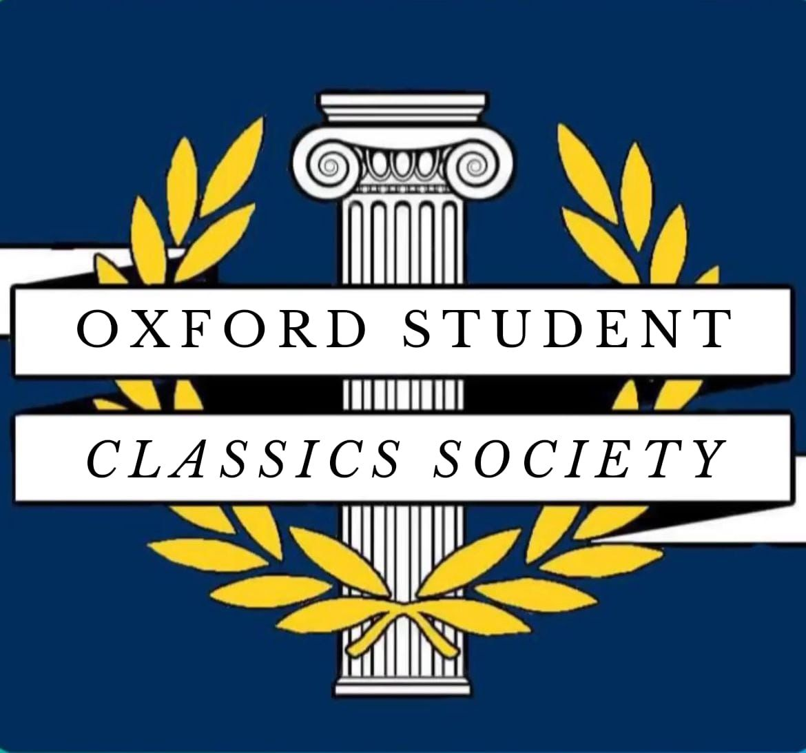
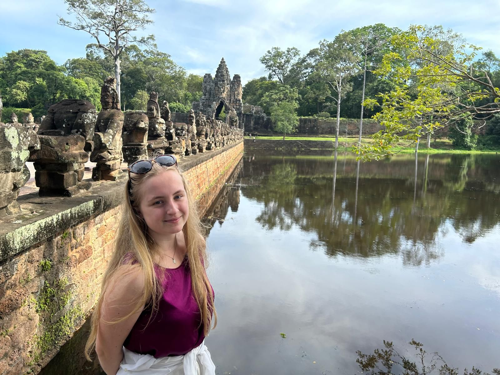
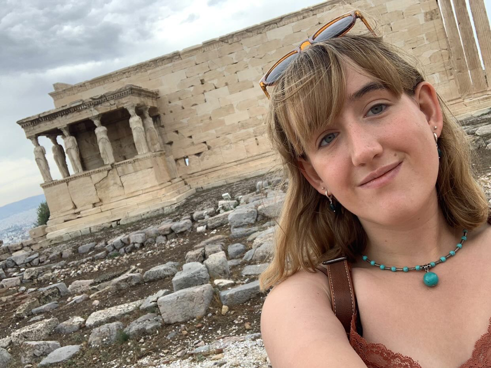

Friends, Oxonians, Classics-lovers, lend me your ears!
We are excited to reveal the new Classics society committee this year, and hopefully a greater revival of this wonderful society! Stay tuned for updates about all the wonderful events we have planned…

Meet the commitee

Χαιρε! My name is Marianne (she/her) and I am very proud to be your president (/dictator) for this year. I am a third year studying Classics with Sanskrit, and find my passions captured primarily by the literature and grammar side of the ancient world (shout out to the genitive! My favourite case)
Favourite classical figure: Turnus, king of the Rutuli

Ave! I’m Oliver (he/him), a 3rd year classicist at BNC. I’m a lover of all things theatre and history, and I’m really looking forward to running the society as vice president this year!
Favourite classical figure: Diogenes of Sinope - anyone who can put Plato in his place is good in my books

Salve, my name is Charlotte (she/her). I am a 2nd year classicist at LMH and official representative of the cult of Dionysus. I love all things Greek theatre and think that most, if not all, problems can be solved by shouting οι μοι at them.
My name is Ted (he/him) and I'm a third year at New College doing... not classics (shock horror). Despite spending my days doing maths and philosophy, I love a bit of the ancient world, especially in the context of those two subjects. I'm also a big fan of Greek theatre and having quasi-religious experiences in Pompeii.
Favourite classical figure: Archimedes and his giant boat-crushing claw
Hi, I'm Nat (they/them), 3rd year CAMES-ist at bnc. I love all things folky and old, especially ancient languages and song!
Favourite classical figure: Medea or Dido
Hi I'm Izzy, a 1st year at LMH doing classics. Always happy to go down rabbit holes of obscure ancient history like the Minoans. Favourite classical figure: Homer (I know basic but I don't know who else to do).
Favourite fictional classic figure: Ariadne
Positions:
- Marianne: President
- Oliver: Vice President
- Charlotte: Treasurer
- Ted: Secretary
- Nat: Diveristy officer
- Izzy: IT officer and freshers representative